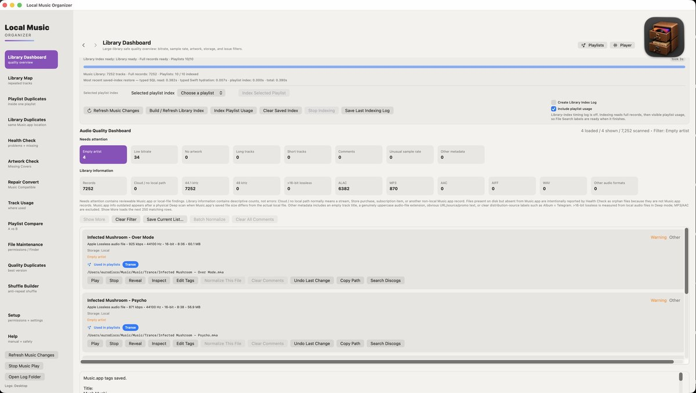
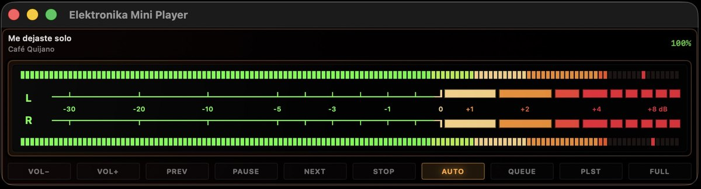
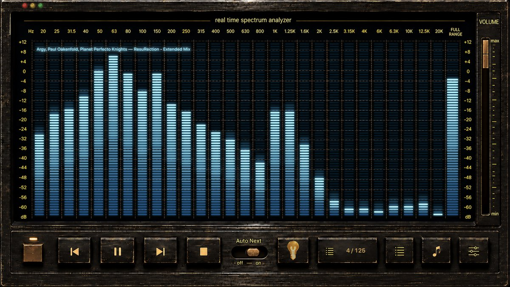

⌕
I cannot find a file
Health Check finds Music.app records whose local files are missing, inaccessible or suspicious. File Search searches the physical music folders on disk and can reveal the exact file in Finder.
Created by a collector for collectors, Local Music Organizer is a detailed macOS toolkit for serious offline music libraries. Find missing files and duplicates, understand playlist relationships, review metadata, compare physical versions, inspect audio quality, play local files with a live spectrum analyzer, and repair or convert standalone audio files. Everything stays on your Mac, and consequential changes happen only when you explicitly choose them.
Free 3-day trial with full access. Then unlock once for US$29.99. Regional prices and taxes are set by Apple. No subscription or automatic charge.
You do not need to learn every tool before using the app. Choose what you are trying to understand, run the relevant check, review the result, and make a change only when you intentionally choose an action.
Health Check finds Music.app records whose local files are missing, inaccessible or suspicious. File Search searches the physical music folders on disk and can reveal the exact file in Finder.
Health Check > Check Album Completeness uses Music.app Track / Disc totals to show missing numbered positions without guessing titles or querying the Internet. If you want this checked after future imports, enable the optional Notify about incomplete newly added albums setting in Setup. It is off by default and is independent of Automatic Library Index.
Playlist Duplicates finds repeated entries inside one playlist. Library Duplicates finds multiple Music.app records that may point to the same file. Quality Duplicates compares different physical versions of the same recording.
Track Usage and Library Map show which playlists contain a track and where repeated recordings occur. Playlist Compare shows what two playlists share and what is unique to each.
File Maintenance can find repeated spaces and incorrect parenthesis spacing in Music.app Title / Artist / Album and local filenames. Review one row or batch-fix selected issues; safe physical filename renaming verifies the same Music.app track and artwork. Supported tags can also be edited directly, with Undo Last Change.
Run Library Dashboard in Deep mode. If Music.app still has outdated technical information for a local track, the Music.app info outdated card isolates those files. Refresh Music.app Info asks Music.app to reread the actual audio file without rewriting it.
Artwork Check finds tracks without cover artwork. Use the longer live verification when you need to confirm recent Music.app changes rather than relying only on saved index data.
Audio Inspector > Audio Authenticity Analyzer looks for technical signs of lossy-to-lossless conversion, suspicious bandwidth limits, bitrate mismatches and possible sample-rate upscaling. Results are estimates to review, not automatic verdicts.
Audio Inspector shows codec/container details, bitrate, sample rate, bit depth, channels, duration, file size, an authenticity assessment, a dB-scale spectrogram and raw technical output. The static Inspector does not show a waveform; the interactive full-track waveform belongs to Live Spectrum. Both work without adding the file to Music.app.
Repair / Convert handles common and specialist formats with engines included in the app, plus batch normalization for sample rate and lossless bit depth. After a verified conversion you decide whether to keep the source, move it to Trash or archive it in a dated LMO Backup Folder. Vinyl De-click lets you compare short before-and-after samples before processing a full recording.
Shuffle Builder creates a new playlist with spacing rules for artists, related projects, albums, repeated titles and covers while leaving the original playlist unchanged.
The first view shows primary/additional folder access and the optional offline warning. The second shows logging, notifications, Automatic Library Index, saved-index persistence and diagnostics. Notify about incomplete newly added albums is off by default; when enabled it watches for newly detected Music.app records and checks only the affected Artist — Album releases. It does not require Automatic Library Index to be enabled, but it does require an already complete Full Library Records index.

Start the trial only when you are ready. For three days, every feature is available for both a locally stored Music.app library and standalone audio files opened from Finder or added by drag and drop.
The trial does not renew and creates no automatic charge. After it ends, continued use requires a one-time Full Version purchase for US$29.99. Regional prices and taxes are set by Apple. There is no subscription.
Setup now includes Notify about incomplete newly added albums. It is off by default. When enabled, LMO performs a lightweight Music.app identity check when new records are detected, then checks only the affected Artist — Album releases for missing tracks, missing discs or conflicting Track / Disc totals. Removing and later re-importing tracks is treated as a new import event and can warn again.
Health Check can find records with Track Number, Track Count, Disc Number or Disc Count. Clearing is explicit and selected-record only. LMO verifies the live record before and after the write and restores the exact pre-cleanup editable metadata if Music.app changes it while numbering fields are cleared.
Relink This Folder... maps a missing record's old parent folder to a replacement folder, previews exact relative-path matches and relinks the existing Music.app Persistent IDs. It does not move, copy, rename or delete the physical audio files and does not intentionally create new Music.app records.
Orphan import now verifies the exact physical path against live Music.app before it treats an import as successful. Existing exact-path records are reused instead of duplicated, and one verified record can be added to several selected destination playlists.
Remove Missing Record... targets the exact live Music.app Persistent ID after confirmation. LMO also retires the verified-absent record from its caches and saved index so an already removed record does not simply reappear on the next Health Check.
Before cached Missing information blocks an orphan workflow, LMO checks the relevant Music.app Persistent ID live. A genuinely absent record is retired; a live record is rebuilt from current information; an inconclusive live read remains fail-closed.
The local player keeps queue, Previous / Next and Auto Next context across the full Live Spectrum window and the compact Elektronika Mini Player. Option-click supported Play or Preview controls to send a readable local file to the same local playback engine.
Quick Help and the illustrated User Guide now explain the new Setup notifications, album-completeness logic, Track / Disc cleanup boundaries, missing-record actions, folder relinking, orphan import and the full/mini local players.
Use the overview above when you want a quick starting point. The complete toolkit below shows the individual tools in more detail. Library organization features integrate with Music.app, while Audio Inspector, Audio Authenticity, Live Spectrum, playback, repair and conversion also work directly with physically available local files outside Music.app. Apple Music subscription, cloud-only and streaming content are not part of these local-file workflows.
Start here when you are not sure what is unusual in the library. One read-only scan groups tracks by missing files, artwork, bitrate, duration and metadata, and also shows clear technical categories such as 44.1 kHz, 48 kHz, ALAC, MP3, AAC, AIFF, WAV, other formats and lossless files above 16-bit. Select a category to see the actual tracks behind the number.
Deep Dashboard can find tracks where Music.app still holds old technical file information after a file was replaced or changed. Refresh Music.app Info tells Music.app to reread the actual local file, verifies the result, keeps protected tags and artwork unchanged, and does not convert, move, delete or rewrite the audio file.
When technical error logging is enabled in Setup, open explicit read-only support tests for Startup State and Track Flags. Startup State records several short Music.app player-state snapshots after launching Music.app without Play; Track Flags audits playback-related Music.app fields in bounded ranges and never traverses the physical library.
Understand where every track is used, inspect playlist membership, locate repeated records and reveal the exact Music.app playlist containing a selected item.
Find duplicate playlist entries, repeated library records and competing quality versions. Exact occurrence handling preserves the remaining copy when repeated entries share one Persistent ID.
Diagnose missing Music.app links, orphan physical files and path conflicts; recheck live state before an action; relink one file or a moved folder; import a genuine orphan; remove an exact missing Music.app record; and optionally review Album Completeness or Track / Disc numbering. The scan itself remains read-only.
Find Music.app records whose artwork cannot be confirmed. Use the fast candidate path for normal review or the longer full live verification when recent Music.app changes matter more than speed. LMO does not download or rewrite artwork automatically.
Search a saved SQLite physical-file index by artist, title, album, filename or path, load large results in pages, see exact playlist use and reveal files in Finder.
Compare every saved entry from two playlists in SQLite and receive completed matches in pages, with a targeted long refresh available after either playlist changed.
Open a standalone local file to inspect codec/container family, channels, bit depth, sample rate, bitrate, duration and file size, together with an authenticity assessment, a dB-scale spectrogram and raw afinfo output. The static Inspector does not show a waveform; use Live Spectrum for the interactive full-track waveform. Filenames, paths and technical text can be selected and copied for research or support.
Scan the saved Music.app Library Index, one selected playlist or an individual file for possible lossy-to-lossless transcodes, sample-rate upscales and bitrate mismatches. Every flagged track includes confidence, detected cutoff, estimated source class and a plain-language explanation.
Play readable local files in an independent window with a real-time logarithmic analyzer, full-track waveform, draggable seeking, technical meters, playback gain, Previous / Next, Auto Next, queue navigation and playlist browsing. Choose the detailed Original presentation or the hardware-style Classic skin. Use the permanent Player button or Option-click a supported Play control.
Drop files, folders or CUE sheets into Repair / Convert, or onto the app icon, to begin local background conversion with the selected profile and visible progress.
Convert common and specialist audio sources with offline engines included in the application. Batch Normalize can keep the format family while reducing 48 kHz to 44.1 kHz and/or lossless depth above 16-bit to 16-bit. Choose how the verified conversion handles the original: keep it, move it to Trash or archive it in a dated LMO Backup Folder.
Create short before-and-after samples, compare processing strength and choose the weakest effective mode before applying de-clicking to the full recording.
Review file paths and permissions, inspect Finder metadata and hidden embedded tags, and scan Music.app Title / Artist / Album plus local filenames for repeated spaces and incorrect parenthesis spacing. Review or batch-fix selected naming/tag issues; physical filename renames preserve the folder and extension and use Music.app link, artwork and file verification with rollback protection.
Create a new anti-repeat shuffled playlist while preserving the original source playlists and avoiding destructive library changes.
Edit supported Music.app tags manually from visible result cards. Changes appear in Music.app immediately, and Undo Last Change restores the values from the most recent tag edit.
The Library Index is LMO's saved working copy of Music.app information. It lets library-wide tools reuse what has already been read instead of asking Music.app for every record again.
Recent additions, replacements and removals can be refreshed selectively, and a playlist-only change can be indexed without rebuilding every playlist.
Read-only tools use the available saved snapshot and clearly label partial coverage. Use Refresh Music Changes after adding, replacing or removing a few tracks, or Index Selected Playlist after changing one playlist in Music.app.
Health Check deliberately separates a Music.app record from playlist membership, the physical audio file and LMO's saved Library Index. A Missing record is not an orphan file, and an orphan file is not proof that Music.app should create another record. Recheck live state before changing anything.
A Music.app record still exists but its saved local path is unavailable. Use Recheck first. Repair Local Link... keeps the same Music.app record and points it to a chosen replacement file.
Relink This Folder... maps the old saved parent folder to a replacement folder and previews exact relative-path matches. Successful rows keep the existing Music.app records; LMO does not move the physical files.
Remove Missing Record... is offered only when LMO has the exact Music.app Persistent ID. After confirmation and live verification it removes the Music.app record, not a physical audio file, and synchronizes LMO's caches/index so the removed record does not return as stale state.
An orphan is a readable physical file whose exact path is not represented by the saved Music.app library. If it is genuinely new, the explicit import workflow verifies the live exact path before creating or reusing a Music.app record. If it is actually the replacement location for a Missing record, relink that existing record instead.
Check Album Completeness (Track / Disc totals) is read-only. It uses live Music.app numbering metadata to report missing numbered positions, missing discs or conflicting totals. It does not query the Internet or guess missing track titles.
Find Track / Disc Numbering is a separate optional discovery scan. Only the explicit cleanup action can clear Track Number, Track Count, Disc Number and Disc Count, and protected Music.app metadata is verified around the write.
Switch views below. Every preview opens in the existing full-resolution modal with Previous / Next buttons, Left / Right keyboard navigation and Escape to close.

The Dashboard is designed to answer a simple first question: “What is actually in my library?” Run the scan, then select a card to turn a number into a list of tracks you can inspect. The cards do not silently change files.
Standard is the normal starting point. Deep reads the actual local audio files for more reliable codec, bitrate, duration and lossless bit-depth information. Turn off Skip slow file checks when complete local-file coverage matters more than speed.
44.1 kHz and 48 kHz are informational sample-rate groups, not errors. ALAC, MP3, AAC, AIFF, WAV and Other audio formats show how the collection is encoded. Select any card to see the tracks behind the number.
In Deep mode, Music.app info outdated appears when Music.app's saved file information does not match the actual local file. Select the card to isolate those tracks, then use Refresh Music.app Info for one track or the whole group. A corrected track disappears from the outdated list after verification.
LMO asks Music.app to reread the existing file and verifies the result. It does not convert, move, delete or rewrite the audio file, and protected tag and artwork fields are checked for unexpected changes. Refresh history is written to the selected log folder when logging is enabled.
>16-bit lossless comes from real local-file inspection in Deep mode. It is useful when you want to find 20/24/32-bit lossless or PCM files and decide whether their extra size is useful for your library.
Batch Normalize can send selected 48 kHz or high-bit-depth results to Repair / Convert. Nothing is normalized merely because it appears in a Dashboard category.
LMO can surface web-address text such as www, http or https inside Title or Artist for manual review. It does not automatically cut that text out because it may be part of a legitimate title.
Comments is a normal free-text Music.app field, not an error by itself. It may contain an encoder/ripper signature, DJ or release-group note, source information, a website or store URL, promotional text, catalogue information, or the owner's own notes. Clear Comments / Clear All Comments changes only the Music.app Comments field for the chosen records; the physical audio file is not renamed or rewritten, and supported changes can be undone.
The Dashboard can isolate records with a blank Artist field. Open Edit Tags only on the track you intend to correct; the editor keeps the Music.app fields visible before you choose Save to Music.app.

Open full sizeThe two buttons beside the Local Music Organizer icon are global controls, not part of any one scan. Playlists opens the Music.app playlist/folder hierarchy. Player opens or restores the independent Live Spectrum Player without starting a scan.
I am a music collector and Music.app user with a large offline library accumulated over many years. Eventually it became total disorder: duplicate records, repeated playlist entries, missing artwork, inconsistent tags, broken references, several versions of the same album and rare formats scattered across different folders and disks.
The project began as a small utility for randomizing playlists without changing the originals. As the collection and its practical problems grew, that focused tool expanded into Local Music Organizer: one place to understand the library before touching it, see what was duplicated, learn where a track was used, compare versions and clean safely.
Conversion was another part of the same problem. No single converter handled every difficult source I owned. TAK, SACD ISO, DSD, DTS, AC3, CUE albums, tracker modules and other archival formats often required several tools and a fragile sequence of actions.
The program brought order back to my own collection and solved the practical problems I had lived with for years. Only then did I realize that it could also be useful to other people like me - people who still maintain serious offline music libraries and want control instead of automatic destructive cleanup.
The interface is intentionally restrained and tool-first. Local Music Organizer is not designed as a decorative showcase: screen space is used for evidence, paths, technical details, explicit actions and safety explanations that help solve real library problems.
Open a readable local audio file in an independent macOS player window without creating another Music.app record. Open it from the permanent Player button, or hold Option (⌥) while clicking a supported Play control. The window combines real-time analysis, full-track navigation, queue/playlist context and transport controls.
Open it from the overlapping-rectangles button in Original. The narrow floating window shares the same loaded track, queue, playback volume and Auto Next state as Live Spectrum. It shows title/artist, live stereo L/R level meters, step volume controls, transport, Current Queue and Music.app playlist access. FULL brings the complete Live Spectrum window back without interrupting playback.

Open full sizeThe Classic skin keeps the real-time analyzer inside a dedicated faceplate with transport, Auto Next, volume and information controls. Queue, playlist tree and Track Card can appear over the analyzer when needed without turning the Player into a separate library screen.

Open full sizeBatch-check the audio behind a local Music.app library without altering the source files. The analyzer compares declared codec, bitrate, sample rate and bit depth with measured spectral behavior, then surfaces only recordings that deserve review.
Actual decoding depends on the source being valid and supported by the bundled engine. Encrypted, corrupted or non-standard files can still fail.
Repair / Convert accepts file drops directly in its queue area. You can add one file, several files or CUE sheets, inspect the queue, select only the required items and convert with the current output profile.
Files and CUE sheets can also be dropped onto the Local Music Organizer application icon. A normal drop starts an automatic background conversion batch using the current Repair / Convert profile. Hold Option while dropping to open the first file in Audio Inspector instead of converting it.
For CUE albums, macOS may request access to the album folder containing the CUE sheet and its referenced audio files. The authorized root is remembered for later CUE files inside that folder. Multi-file CUE sheets are interpreted per referenced source file, so track ranges stay attached to the correct FILE entry.
com.apple.lastuseddate#PS and preserves quarantine, FinderInfo, macl and Finder tags.Enable the requested logging options before reproducing the issue, run the requested checks without applying fixes, and keep the same LMO session open until the requested scans and logs are complete.
All application screenshots are collected here once. Select any image to open the full-resolution version.
Launch pages, community discussions and independent software listings.
Local Music Organizer uses App Sandbox, macOS system file pickers and Music.app Automation permission. It includes universal Apple Silicon and Intel engines, a privacy manifest and a typed SQLite Library Index designed for large local collections.
Try every feature, then unlock the Full Version once for US$29.99. Apple determines regional equivalents and taxes. No subscription or automatic charge.
{kind=link}
{kind=link}
{kind=link}